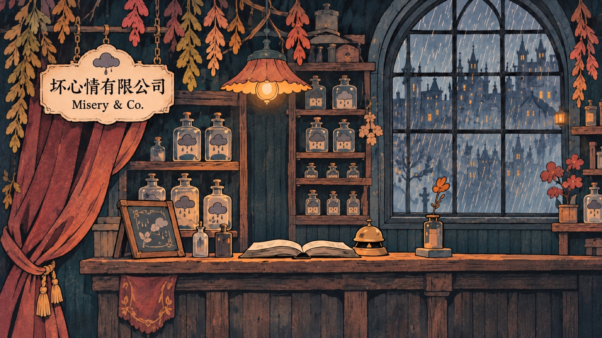

MISERY & CO.
The Rainy-Day Shop
SOUND
22%
30%

01
Ingredient preparation

02
Warm and blend
03
Filter and bottle
 Ingredient trayTake ingredients from the cabinet
Ingredient trayTake ingredients from the cabinet
Your ingredient tray ·
Select · Return
✦
Click the path to walk · Approach to gather
♧
♧
Progress saves on this device